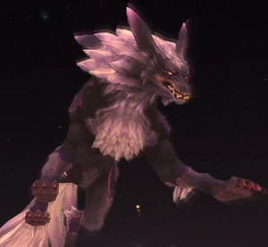

Level 75 reference · Zenith rules
| Pet Information | |
|---|---|
| Name | Fenrir |
| Jobs | DRK/BLM |
| Traits | Magic Attack Bonus I andAttack Bonus I 10
Magic Attack Bonus II and Attack Bonus II 30 Magic Attack Bonus III and Attack Bonus III 50 Magic Attack Bonus IV and Attack Bonus IV 70 |


Has 82 INT at 75.
Has a 30% attack bonus at all levels.
Has lower attack delay than other avatars(besides Diabolos)
Avatar Abilities
Fenrir's Blood Pacts are all dark-based.
Blood Pact: Rage
| Blood Pact | Level | MP | S/T1 | Description | Comment |
|---|---|---|---|---|---|
| Howling Moon | 1 | LVx2 | Required MP: Caster's level x2. Uses all MP and delivers dark elemental damage to enemies within an area of effect. | Available only while Astral Flow is in effect. | |
| Moonlit Charge | 5 | 17 | S | Blinds target. | |
| Crescent Fang | 10 | 19 | S | Paralyzes target. | |
| Eclipse Bite | 65 | 109 | Delivers a threefold attack. |
Blood Pact: Ward
| Blood Pact | Level | MP | S/T1 | Description | Comment |
|---|---|---|---|---|---|
| Lunar Cry | 21 | 41 | Lowers target's accuracy and evasion. | The amounts vary based on the phase of the moon, but always add up to -32. Accuracy lowered more ← 100% « moon phase » 0% → Evasion lowered more. | |
| Lunar Roar | 32 | 27 | Removes two beneficial magic effects from enemies within an area of effect. | No message is produced in the log when effects are removed. | |
| Ecliptic Growl | 43 | 46 | Enhances attributes of party members within an area of effect. | The amounts vary based on the phase of the moon, but the two categories always add up to +8. STR/DEX/VIT boost higher ← 100% « moon phase » 0% → AGI/INT/MND/CHR boost higher. Lasts 180 seconds. | |
| Ecliptic Howl | 54 | 57 | Enhances accuracy and evasion of party members within an area of effect. | The amounts vary based on the phase of the moon, but always add up to +26. Accuracy boost higher ← 100% « moon phase » 0% → Evasion boost higher. Lasts 180 seconds. |
1 S/T column indicates whether a particular Blood Pact participates in Skillchains (S) or uses TP (T). Blood Pacts that use TP can be used as a Magic Burst; however, Astral Flow can also Magic Burst even though it does not use TP.
How to Obtain
Quest:
| Magic of Vana'diel: Summoning Magic |
|---|
| Avatars:
Carbuncle • Diabolos • Fenrir • Garuda • Ifrit • Leviathan • Ramuh • Shiva • Titan |
| Spirits:
Air • Dark • Earth • Fire • Ice • Light • Thunder • Water Magic Category Jump: Blue Magic • Dark Magic • Divine Magic • Elemental Magic • Enfeebling Magic • Enhancing Magic • Healing Magic • Ninjutsu • Songs • Summoning |
Adapted from Eden Wiki: Fenrir · Contributors and history · CC BY-SA 4.0. Revision 44567. Layout, links and optional background text adapted for Zenith.